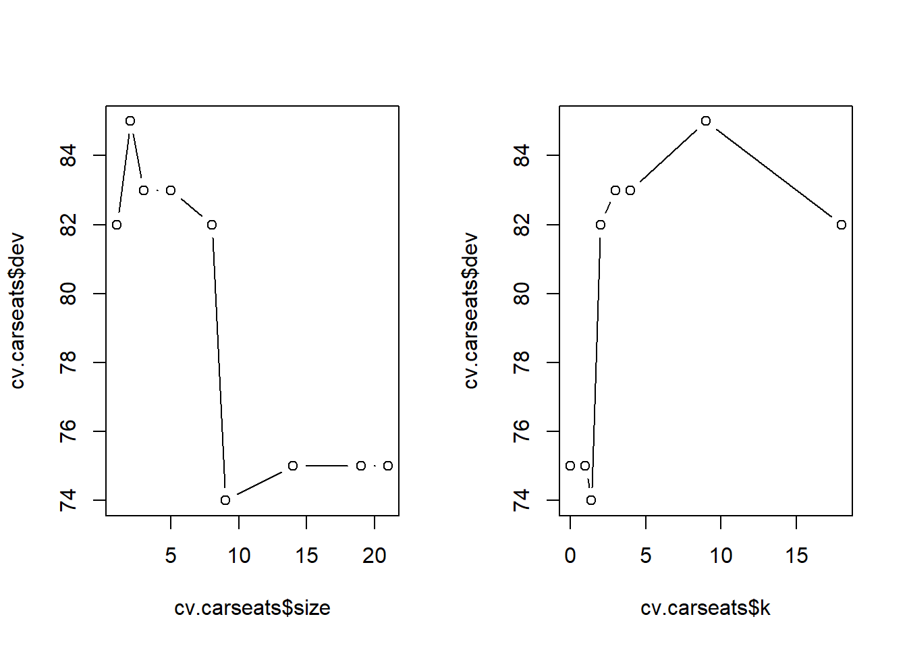
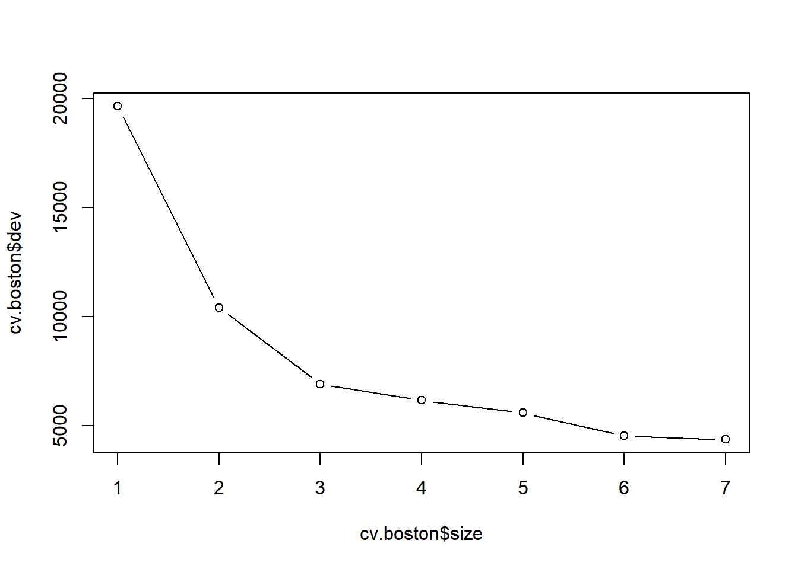
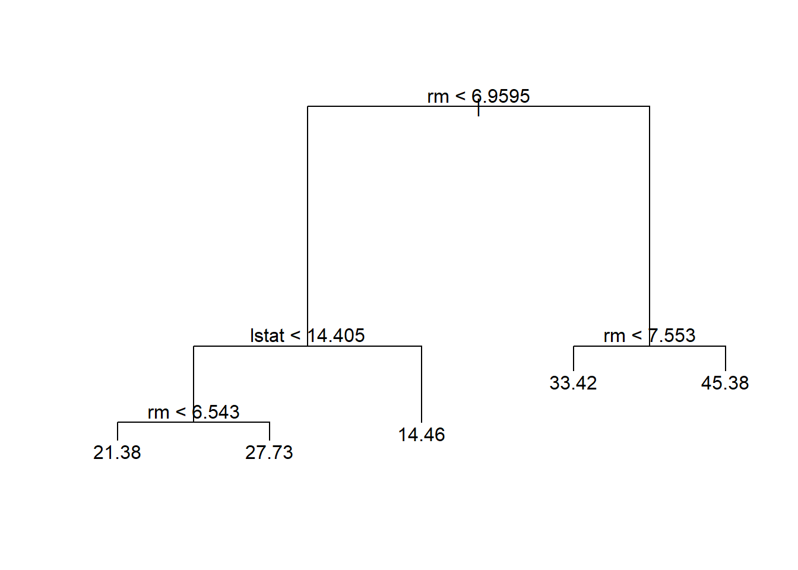
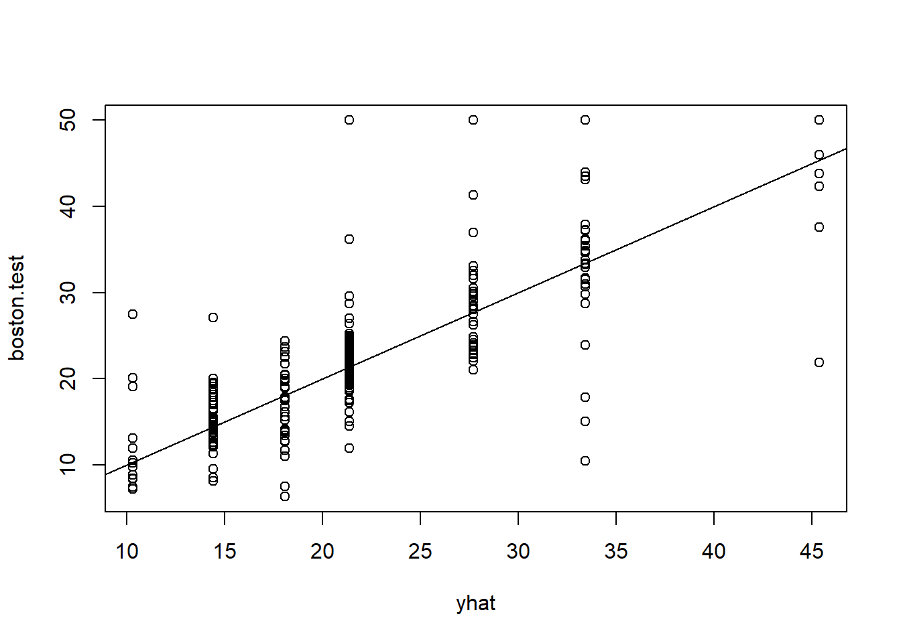
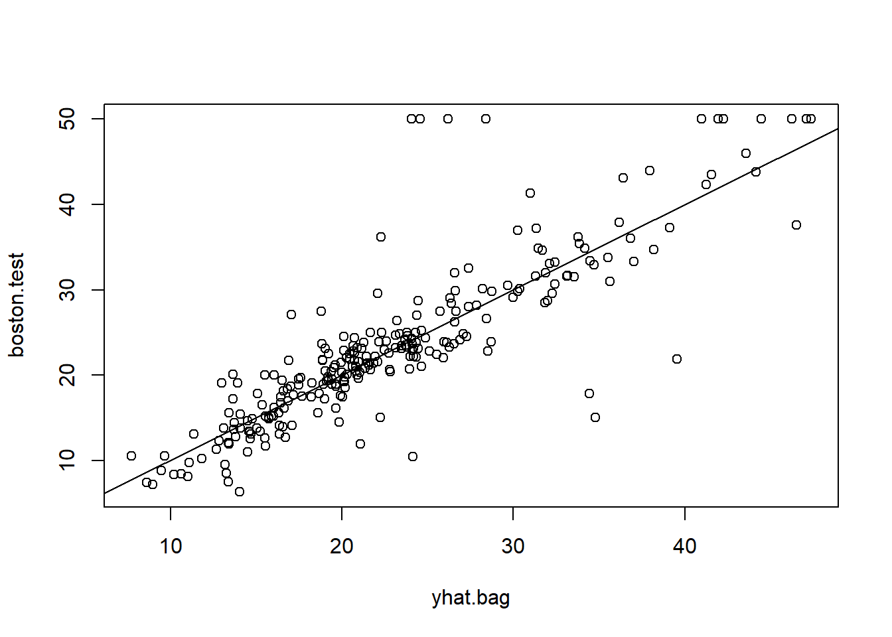
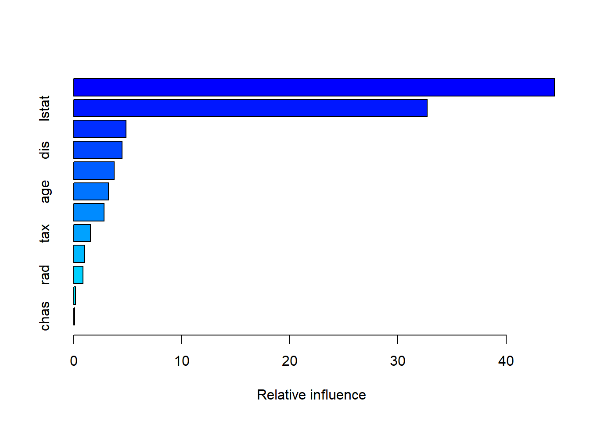
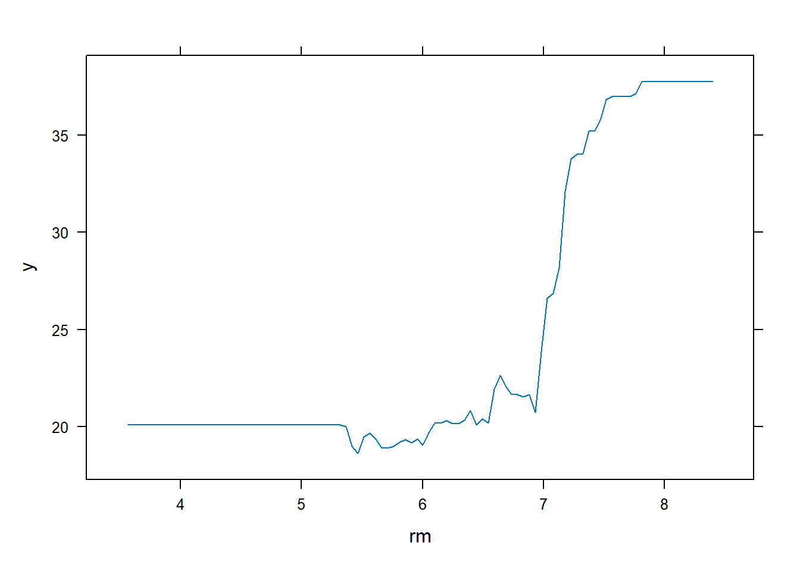
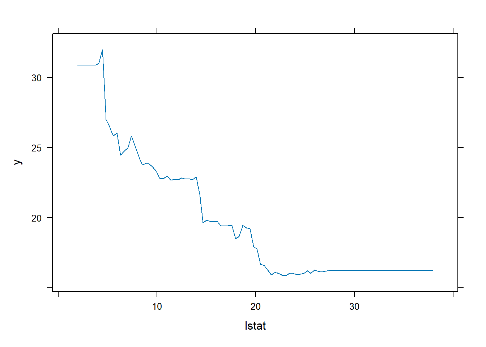

library(tree)8 Lab8 Árboles de decisión
| Tipo | |
|---|---|
| Slides: | https://hastie.su.domains/ISLR2/Slides/Ch8_Tree_Based_Methods.pdf |
| Lab-html: | https://hastie.su.domains/ISLR2/Labs/Rmarkdown_Notebooks/Ch8-baggboost-lab.html |
| Lab-Rscript: | https://hastie.su.domains/ISLR2/Labs/R_Labs/Ch8-baggboost-lab.R |
| Data: | Carseats y Boston (ISLR2) |
8.1 Árboles de clasificación
El paquete tree se utiliza para construir árboles de clasificación y regresión.
Primero usamos árboles de clasificación para analizar el conjunto de datos Carseats. En estos datos, Sales es una variable continua (unidades vendidas -en miles- en cada ubicación), por lo que comenzamos recodificándola como una variable binaria. Usamos la función ifelse() para crear una variable, llamada High, que toma el valor Yes si la variable Sales excede de 8, y toma el valor No de lo contrario. Y usamos la función data.frame() para fusionar High con el resto de los datos de Carseats.
library(ISLR2)
High <- factor(ifelse(Carseats$Sales > 8, "Yes", "No"))
Carseats <- data.frame(Carseats, High)La función tree() permite ajustar un árbol de clasificación con el fin de predecir High usando todas las variables excepto Sales. Tiene una sintaxis bastante similar a la de la función lm().
tree.carseats <- tree(High ~ . - Sales, Carseats)La función summary() enumera las variables que se utilizan como nodos internos en el árbol, el número de nodos terminales y la tasa de error (entrenamiento).
summary(tree.carseats)
Classification tree:
tree(formula = High ~ . - Sales, data = Carseats)
Variables actually used in tree construction:
[1] "ShelveLoc" "Price" "Income" "CompPrice" "Population"
[6] "Advertising" "Age" "US"
Number of terminal nodes: 27
Residual mean deviance: 0.4575 = 170.7 / 373
Misclassification error rate: 0.09 = 36 / 400 Vemos que la tasa de error de entrenamiento es del 9%.
Para árboles de clasificación, la deviance reportada en la salida de summary() viene dada por \[-2 \sum_m \sum_k n_{mk} \log \hat{p}_{mk},\] donde \(n_{mk}\) es el número de observaciones en el nodo terminal \(m\)-ésimo que pertenecen a la \(k\)-ésima clase. Esto está estrechamente relacionado con la entropía (definida en el libro, en (8.7)). Una pequeña deviance indica un árbol que proporciona un buen ajuste a los datos (de entrenamiento). La residual mean deviance reportada es simplemente la deviance dividida por \(n-|T_0|\), que en este caso es 400 - 27 = 373.
8.1.1 Gráfico
Una de las propiedades más atractivas de los árboles es que se pueden representar gráficamente. Usamos la función plot() para mostrar la estructura de árbol y la función text() para mostrar las etiquetas de los nodos. El argumento pretty = 0 indica a R que incluya los nombres de categoría para cualquier predictor cualitativo, en lugar de simplemente mostrar una letra para cada categoría.
plot(tree.carseats)
text(tree.carseats, pretty = 0)
El indicador más importante de Sales parece ser la ubicación de las estanterías, ya que la primera rama diferencia las ubicaciones Good de las ubicaciones Bad y Medium.
Nota Víctor: De nuevo falta en el material original interpretar el gráfico… A grandes rasgos, se lee de arriba a abajo. Tras cada nodo (variable y criterio asociado), por ejemplo,
Price < 135, salen dos ramas, a la izquierda serían las de las observaciones queSícumplen el criterio, a la izquierda las queNolo cumplen.
Si solo escribimos el nombre del objeto del árbol, R imprime la salida correspondiente a cada rama (node) del árbol: split es el criterio de división (p. ej., Price < 92,5), n es el número de observaciones en esa rama, la deviance, yval es la predicción general para la rama (Yes o No), y yprob es la fracción de observaciones (probabilidad) en esa rama (en este ejemplo, primero la fracción de No y luego la de Yes). Las ramas que conducen a los nodos terminales se indican con asteriscos.
tree.carseatsnode), split, n, deviance, yval, (yprob)
* denotes terminal node
1) root 400 541.500 No ( 0.59000 0.41000 )
2) ShelveLoc: Bad,Medium 315 390.600 No ( 0.68889 0.31111 )
4) Price < 92.5 46 56.530 Yes ( 0.30435 0.69565 )
8) Income < 57 10 12.220 No ( 0.70000 0.30000 )
16) CompPrice < 110.5 5 0.000 No ( 1.00000 0.00000 ) *
17) CompPrice > 110.5 5 6.730 Yes ( 0.40000 0.60000 ) *
9) Income > 57 36 35.470 Yes ( 0.19444 0.80556 )
18) Population < 207.5 16 21.170 Yes ( 0.37500 0.62500 ) *
19) Population > 207.5 20 7.941 Yes ( 0.05000 0.95000 ) *
5) Price > 92.5 269 299.800 No ( 0.75465 0.24535 )
10) Advertising < 13.5 224 213.200 No ( 0.81696 0.18304 )
20) CompPrice < 124.5 96 44.890 No ( 0.93750 0.06250 )
40) Price < 106.5 38 33.150 No ( 0.84211 0.15789 )
80) Population < 177 12 16.300 No ( 0.58333 0.41667 )
160) Income < 60.5 6 0.000 No ( 1.00000 0.00000 ) *
161) Income > 60.5 6 5.407 Yes ( 0.16667 0.83333 ) *
81) Population > 177 26 8.477 No ( 0.96154 0.03846 ) *
41) Price > 106.5 58 0.000 No ( 1.00000 0.00000 ) *
21) CompPrice > 124.5 128 150.200 No ( 0.72656 0.27344 )
42) Price < 122.5 51 70.680 Yes ( 0.49020 0.50980 )
84) ShelveLoc: Bad 11 6.702 No ( 0.90909 0.09091 ) *
85) ShelveLoc: Medium 40 52.930 Yes ( 0.37500 0.62500 )
170) Price < 109.5 16 7.481 Yes ( 0.06250 0.93750 ) *
171) Price > 109.5 24 32.600 No ( 0.58333 0.41667 )
342) Age < 49.5 13 16.050 Yes ( 0.30769 0.69231 ) *
343) Age > 49.5 11 6.702 No ( 0.90909 0.09091 ) *
43) Price > 122.5 77 55.540 No ( 0.88312 0.11688 )
86) CompPrice < 147.5 58 17.400 No ( 0.96552 0.03448 ) *
87) CompPrice > 147.5 19 25.010 No ( 0.63158 0.36842 )
174) Price < 147 12 16.300 Yes ( 0.41667 0.58333 )
348) CompPrice < 152.5 7 5.742 Yes ( 0.14286 0.85714 ) *
349) CompPrice > 152.5 5 5.004 No ( 0.80000 0.20000 ) *
175) Price > 147 7 0.000 No ( 1.00000 0.00000 ) *
11) Advertising > 13.5 45 61.830 Yes ( 0.44444 0.55556 )
22) Age < 54.5 25 25.020 Yes ( 0.20000 0.80000 )
44) CompPrice < 130.5 14 18.250 Yes ( 0.35714 0.64286 )
88) Income < 100 9 12.370 No ( 0.55556 0.44444 ) *
89) Income > 100 5 0.000 Yes ( 0.00000 1.00000 ) *
45) CompPrice > 130.5 11 0.000 Yes ( 0.00000 1.00000 ) *
23) Age > 54.5 20 22.490 No ( 0.75000 0.25000 )
46) CompPrice < 122.5 10 0.000 No ( 1.00000 0.00000 ) *
47) CompPrice > 122.5 10 13.860 No ( 0.50000 0.50000 )
94) Price < 125 5 0.000 Yes ( 0.00000 1.00000 ) *
95) Price > 125 5 0.000 No ( 1.00000 0.00000 ) *
3) ShelveLoc: Good 85 90.330 Yes ( 0.22353 0.77647 )
6) Price < 135 68 49.260 Yes ( 0.11765 0.88235 )
12) US: No 17 22.070 Yes ( 0.35294 0.64706 )
24) Price < 109 8 0.000 Yes ( 0.00000 1.00000 ) *
25) Price > 109 9 11.460 No ( 0.66667 0.33333 ) *
13) US: Yes 51 16.880 Yes ( 0.03922 0.96078 ) *
7) Price > 135 17 22.070 No ( 0.64706 0.35294 )
14) Income < 46 6 0.000 No ( 1.00000 0.00000 ) *
15) Income > 46 11 15.160 Yes ( 0.45455 0.54545 ) *8.1.2 Validación
Para evaluar correctamente el rendimiento de un árbol de clasificación con estos datos, debemos estimar el error de prueba en lugar de simplemente calcular el error de entrenamiento. Dividimos las observaciones en conjunto de entrenamiento y un conjunto de prueba, construimos el árbol usando el conjunto de entrenamiento, y evaluamos su desempeño en los datos de prueba. La función predict() se puede utilizar para este propósito. En el caso de un árbol de clasificación, el argumento type = "class" indica a R que devuelva la predicción de clase real. Este enfoque conduce a predicciones correctas para alrededor del 77% de las ubicaciones en el conjunto de datos de prueba.
set.seed(2)
train <- sample(1:nrow(Carseats), 200)
Carseats.test <- Carseats[-train,]
High.test <- High[-train]
tree.carseats <- tree(High ~ . - Sales, Carseats, subset = train)
tree.pred <- predict(tree.carseats, Carseats.test, type = "class")
table(tree.pred, High.test) High.test
tree.pred No Yes
No 104 33
Yes 13 50(104 + 50) / 200[1] 0.77(Si vuelve a ejecutar la función predict(), es posible que obtenga resultados ligeramente diferentes, debido a “empates”: por ejemplo, esto puede suceder cuando las observaciones de entrenamiento correspondientes a un nodo terminal se dividen equitativamente entre valores de respuesta Yes y No.)
8.1.3 Poda del árbol
A continuación, consideramos si podar el árbol podría conducir a mejores resultados. La función cv.tree() realiza una validación cruzada para determinar el nivel óptimo de complejidad del árbol; la poda por costes de complejidad se utiliza para seleccionar una secuencia de árboles para su consideración. Usamos el argumento FUN = prune.misclass para indicar que queremos que la tasa de error de clasificación guíe el proceso de validación cruzada y poda, en lugar del valor predeterminado para la función cv.tree(), que es la deviance. La función cv.tree() reporta el número de nodos terminales de cada árbol considerado (size), así como la tasa de error correspondiente y el valor del parámetro coste-complejidad utilizado (k, que corresponde a \(\alpha\) en (8.4)).
set.seed(7)
cv.carseats <- cv.tree(tree.carseats, FUN = prune.misclass)
names(cv.carseats)[1] "size" "dev" "k" "method"cv.carseats$size
[1] 21 19 14 9 8 5 3 2 1
$dev
[1] 75 75 75 74 82 83 83 85 82
$k
[1] -Inf 0.0 1.0 1.4 2.0 3.0 4.0 9.0 18.0
$method
[1] "misclass"
attr(,"class")
[1] "prune" "tree.sequence"A pesar de su nombre, dev corresponde al número de errores de validación cruzada. El árbol con 9 nodos terminales da como resultado solo 74 errores de validación cruzada. Dibujamos la tasa de error como una función tanto de size como de k.
par(mfrow = c(1, 2))
plot(cv.carseats$size, cv.carseats$dev, type = "b")
plot(cv.carseats$k, cv.carseats$dev, type = "b")
Ahora aplicamos la función prune.misclass() para podar el árbol y obtener el árbol de 9 nodos (terminales).
prune.carseats <- prune.misclass(tree.carseats, best = 9)
plot(prune.carseats)
text(prune.carseats, pretty = 0)
¿Cómo de bueno es el desempeño de este árbol podado en el conjunto de datos de prueba? Una vez más, aplicamos la función predict().
tree.pred <- predict(prune.carseats, Carseats.test, type = "class")
table(tree.pred, High.test) High.test
tree.pred No Yes
No 97 25
Yes 20 58(97 + 58) / 200[1] 0.775Ahora, el 77.5% de las observaciones de prueba se clasifican correctamente, por lo que el proceso de poda no solo produjo un árbol más interpretable, sino que también mejoró ligeramente la precisión de la clasificación.
Si aumentamos el valor de best, obtenemos un árbol podado más grande con menor precisión de clasificación:
prune.carseats <- prune.misclass(tree.carseats, best = 14)
plot(prune.carseats)
text(prune.carseats, pretty = 0)
tree.pred <- predict(prune.carseats, Carseats.test, type = "class")
table(tree.pred, High.test) High.test
tree.pred No Yes
No 102 31
Yes 15 52(102 + 52) / 200[1] 0.778.2 Árboles de regresión
Ajustamos un árbol de regresión al conjunto de datos Boston. Primero, creamos un conjunto de entrenamiento y ajustamos el árbol a los datos de entrenamiento.
set.seed(1)
train <- sample(1:nrow(Boston), nrow(Boston) / 2)
tree.boston <- tree(medv ~ ., Boston, subset = train)
summary(tree.boston)
Regression tree:
tree(formula = medv ~ ., data = Boston, subset = train)
Variables actually used in tree construction:
[1] "rm" "lstat" "crim" "age"
Number of terminal nodes: 7
Residual mean deviance: 10.38 = 2555 / 246
Distribution of residuals:
Min. 1st Qu. Median Mean 3rd Qu. Max.
-10.1800 -1.7770 -0.1775 0.0000 1.9230 16.5800 Note que la salida de summary() indica que solo cuatro de las variables han sido usadas en la construcción del árbol. En el contexto de árboles de regresión, la deviance es simplemente la suma de los errores al cuadrado del árbol. Ahora dibujamos el árbol.
plot(tree.boston)
text(tree.boston, pretty = 0)
La variable lstat mide el porcentaje de personas con bajo nivel socioeconómico, mientras que la variable rm corresponde al número medio de habitaciones. El árbol indica que valores más altos de rm, o valores más bajos de lstat, corresponden a casas más caras. Por ejemplo, el árbol predice un precio mediano de vivienda de 45.400 $ para viviendas en distritos censales en los que rm >= 7.55.
Vale la pena señalar que podríamos haber ajustado un árbol mucho más grande, pasando control = tree.control(nobs = length(train), mindev = 0) a la función tree().
8.2.1 Poda
Ahora usamos la función cv.tree() para ver si podar el árbol mejorará el rendimiento.
cv.boston <- cv.tree(tree.boston)
plot(cv.boston$size, cv.boston$dev, type = "b")
En este caso, el árbol más complejo bajo consideración se selecciona mediante validación cruzada. Sin embargo, si deseamos podar el árbol, podemos hacerlo de la siguiente manera, usando la función prune.tree():
prune.boston <- prune.tree(tree.boston, best = 5)
plot(prune.boston)
text(prune.boston, pretty = 0)
De acuerdo con los resultados de la validación cruzada, usamos el árbol no podado para hacer predicciones en el conjunto de prueba.
yhat <- predict(tree.boston, newdata = Boston[-train,])
boston.test <- Boston[-train, "medv"]
plot(yhat, boston.test)
abline(0, 1)
mean((yhat - boston.test)^2)[1] 35.28688En otras palabras, el MSE del conjunto de prueba asociado con el árbol de regresión es de 35.29. Por lo tanto, la raíz cuadrada del MSE es de alrededor de 5.94, lo que indica que este modelo conduce a predicciones de prueba que están (en promedio) dentro aproximadamente 5.94 del valor mediano real de la vivienda para el distrito censal.
8.3 Bagging y Random Forests
Aquí aplicamos bagging y random forests a los datos de Boston, usando el paquete randomForest en R. Los resultados exactos obtenidos en esta sección pueden depender de la versión de R y la versión del paquete randomForest instalado en su computadora.
8.3.1 Bagging
El bagging es simplemente un caso especial de un random forest con \(m=p\). Por lo tanto, la función randomForest() se puede utilizar para realizar ambos. Realizamos el bagging de la siguiente manera:
library(randomForest)randomForest 4.7-1.1Type rfNews() to see new features/changes/bug fixes.set.seed(1)
bag.boston <- randomForest(
medv ~ .,
data = Boston,
subset = train,
mtry = 12,
importance = TRUE
)
bag.boston
Call:
randomForest(formula = medv ~ ., data = Boston, mtry = 12, importance = TRUE, subset = train)
Type of random forest: regression
Number of trees: 500
No. of variables tried at each split: 12
Mean of squared residuals: 11.40162
% Var explained: 85.17El argumento mtry = 12 indica que se deben considerar los 12 predictores (todos), para cada división del árbol; en otras palabras, se debe realizar el bagging. ¿Cómo de bueno es el desempeño de este modelo bagging en el conjunto de prueba?
yhat.bag <- predict(bag.boston, newdata = Boston[-train,])
plot(yhat.bag, boston.test)
abline(0, 1)
mean((yhat.bag - boston.test)^2)[1] 23.41916El MSE del conjunto de prueba asociado con el árbol de regresión bagging es de 23.42, aproximadamente dos tercios del obtenido utilizando un árbol único podado de manera óptima. Podríamos cambiar el número de árboles cultivados por randomForest() usando el argumento ntree:
bag.boston <- randomForest(
medv ~ .,
data = Boston,
subset = train,
mtry = 12,
ntree = 25
)
yhat.bag <- predict(bag.boston, newdata = Boston[-train,])
mean((yhat.bag - boston.test)^2)[1] 25.750558.3.2 Random forest
El crecimiento de un random forest procede exactamente de la misma manera, excepto que usamos un valor más pequeño del argumento mtry. Por defecto, randomForest() usa
- \(p/3\) variables cuando construye un random forest de árboles de regresión, y
- \(\sqrt{p}\) variables cuando construye un random forest de árboles de clasificación.
Aquí usamos mtry = 6.
set.seed(1)
rf.boston <- randomForest(
medv ~ .,
data = Boston,
subset = train,
mtry = 6,
importance = TRUE
)
yhat.rf <- predict(rf.boston, newdata = Boston[-train,])
mean((yhat.rf - boston.test)^2)[1] 20.06644El MSE del conjunto de prueba es 20.07; esto indica que los random forests produjeron una mejora con respecto al bagging en este caso.
Usando la función importance(), podemos ver la importancia de cada variable.
importance(rf.boston) %IncMSE IncNodePurity
crim 19.435587 1070.42307
zn 3.091630 82.19257
indus 6.140529 590.09536
chas 1.370310 36.70356
nox 13.263466 859.97091
rm 35.094741 8270.33906
age 15.144821 634.31220
dis 9.163776 684.87953
rad 4.793720 83.18719
tax 4.410714 292.20949
ptratio 8.612780 902.20190
lstat 28.725343 5813.04833Se reportan dos medidas de importancia de las variables. La primera se basa en la disminución media de la precisión en las predicciones sobre las muestras fuera de la bolsa (bag) cuando se permuta una variable determinada. La segunda es una medida de la disminución total en la impureza de los nodos que resulta de las divisiones sobre esa variable, promediada sobre todos los árboles (esto se representó en la Figura 8.9). En el caso de los árboles de regresión, la impureza del nodo se mide por el RSS de entrenamiento, y para los árboles de clasificación por la deviance. Los gráficos de estas medidas de importancia se pueden producir utilizando la función varImpPlot().
varImpPlot(rf.boston)
Los resultados indican que en todos los árboles considerados en el random forest, el % de nivel socioeconómico bajo (lstat) y el tamaño de la casa (rm) son, con mucho, las dos variables más importantes.
8.4 Boosting
Usamos la función gbm() (paquete gbm), para ajustar árboles de regresión potenciados (boosted) al conjunto de datos Boston:
- con el argumento
distribution = "gaussian"ya que este es un problema de regresión; - se usaría
distribution = "bernoulli"si fuera un problema de clasificación binaria.
El argumento n.trees = 5000 indica que queremos 5.000 árboles, y la opción interaction.depth = 4 limita la profundidad de cada árbol.
library(gbm)Loaded gbm 2.1.8.1set.seed(1)
boost.boston <- gbm(
medv ~ .,
data = Boston[train,],
distribution = "gaussian",
n.trees = 5000,
interaction.depth = 4
)La función summary() produce un gráfico de influencia relativa y también genera estadísticos de influencia relativa.
summary(boost.boston)
var rel.inf
rm rm 44.48249588
lstat lstat 32.70281223
crim crim 4.85109954
dis dis 4.48693083
nox nox 3.75222394
age age 3.19769210
ptratio ptratio 2.81354826
tax tax 1.54417603
indus indus 1.03384666
rad rad 0.87625748
zn zn 0.16220479
chas chas 0.09671228Vemos que, de nuevo, lstat y rm son, con diferencia, las variables más importantes.
También podemos producir gráficos de dependencia parcial para estas dos variables. Estos gráficos ilustran el efecto marginal de las variables seleccionadas en la respuesta después de integrar las otras variables.
par(mfrow = c(1, 2))
plot(boost.boston, i = "rm")
plot(boost.boston, i = "lstat")
En este caso, como cabría esperar, los precios medios de la vivienda aumentan con rm y disminuyen con lstat.
Ahora usamos el modelo potenciado para predecir medv en el conjunto de prueba:
yhat.boost <- predict(boost.boston,
newdata = Boston[-train,], n.trees = 5000)
mean((yhat.boost - boston.test)^2)[1] 18.39057El MSE de prueba obtenido es de 18.39: esto es “superior” al MSE de prueba de random forests y bagging. Si queremos, podemos realizar un boosting con un valor diferente del parámetro de shrinkage \(\lambda\) en (8.10). El valor predeterminado es 0.001, pero esto se modifica fácilmente. Aquí tomamos \(\lambda=0.2\).
boost.boston <- gbm(
medv ~ .,
data = Boston[train,],
distribution = "gaussian",
n.trees = 5000,
interaction.depth = 4,
shrinkage = 0.2,
verbose = F
)
yhat.boost <- predict(boost.boston,
newdata = Boston[-train,], n.trees = 5000)
mean((yhat.boost - boston.test)^2)[1] 16.54778En este caso, usar \(\lambda=0.2\) conduce a un MSE de prueba más bajo que \(\lambda=0.001\).
8.5 Árboles de regresión aditivos bayesianos (omitido)
Nota Víctor: Considero que es suficiente para esta asignatura entender los árboles anteriores. Aquí sólo se mencionan las funciones en R que permiten el análisis pudiéndose consultar los detalles (escasos) en el material original.
La función gbart() del paquete BART permite ajustar un modelo de árbol de regresión aditivo bayesiano, para variables de respuesta cuantitativas. Para respuestas binarias están disponibles lbart() y pbart().